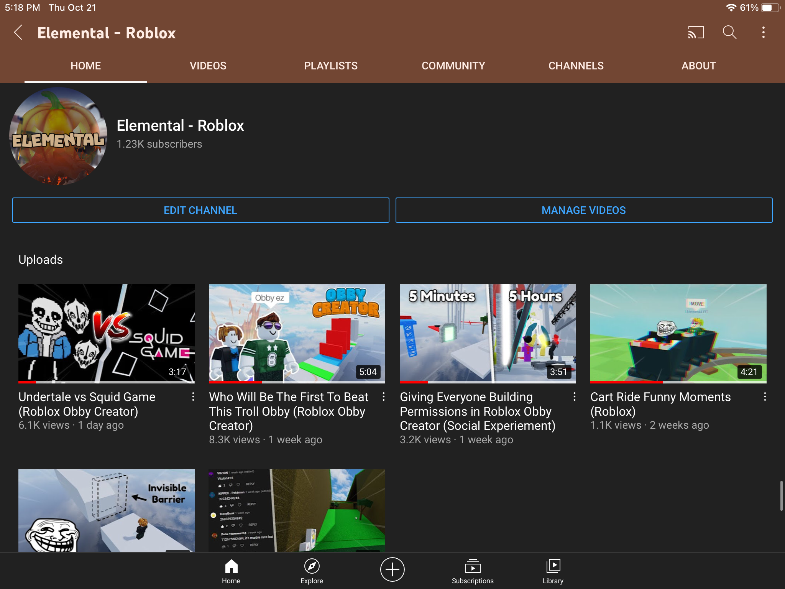

Similar to my projects, I have also spent a lot of time building up experience in certain areas, mainly through projects, school, or life experience. For example, I have spent a few years running a YouTube channel that has gained some popularity, giving me an idea of what it's like to run an online business and create products (videos) for entertainment. Here are a few examples of my past experience.
It has always been a dream of mine to have my own YouTube channel where I would record myself playing games and having oppurtunities to interact with my own community. For the past 3 years, that dream has come true. I have been doing YouTube for over 8 years and have spent the last 4 years working on my current channel, Elemental (Channel Link). On this channel, I post videos on Roblox about specific games, primarily Obby Creator, a sandbox game that provides you with tools to make your own games. My videos on this game were originally how I found success. After spending a year and a half reaching 1,000 subscribers, I had already hit 100,000 by the end of that year (2 months later). Even to this day, I am still continuing to upload Obby Creator content, as well as mixing it up with a few different games.
Along with my channel's success, a have learned a multitude of things. Firstly, I had my first experience with running my own private online business. It had become my job and I would spend around 2-4 hours every day editing and posting new videos, even during school days. I learned to edit videos, create thumbnails, keep up with trends, and much more. Even though the channel has died down due to the unpredictable YouTube landscape, I am still making sure to upload at least every 2 weeks, not only just for business but also out of passion. In the future, however, I plan on potentially using the channel as promotion for my games or future projects I choose to pursue. I also do not want to leave my community behind, so I will make sure to keep the channel going as long as I possibly can. I am very greatful for my channel, not only for all it has tought me but also for all the fun I had making my own videos on the games that I loved and still love to this day.
All Stats Provided Were Last Updated August 20th, 2024
RNG Fights was a recent project of mine that has recently gained a lot of popularity. Originally starting as a passion project, my goal was to learn more about Roblox's programming language, Lua, and practice making my own combat mechanics. Originally being created in March of 2024, the game has gained millions of plays in just a few months and is still receiving active players, as well as updates. Through this game, I have built up experience working with an active player base and actively putting out updates to keep the game fresh. Similar to YouTube, I was also able to get my game monetized.
Although I have had a lot of fun with RNG Fights, the first few days were extremely difficult as the game has suddenly blown up without warning. With this blow up came a wave of hackers and bugs due to the lack of security I had implemented into the game (only me and my friends would play the game once in a while so I didn't think about implementing my own anticheat). The next few days were crucial and I spent the next update working on a basic anticheat. Due to my lack of experience, however, it would take several updates before I could actually create a stronger anticheat. In doing this, I learnt a lot about how people can exploit a game and it's code, especially on a server-to-client boundry. Furthermore, I was able to work with the community and a few testers that I had hired to crack down on bugs and glitches each update to ensure a fun experience. Overall, RNG Fights was my most authentic experience in the gaming industry and was my first time making and working with a popular game. It has taught me a lot about game developement and has provided me with a number of skills and ideas to help me make successful games in the future.
All Stats Provided Were Last Updated August 20th, 2024
I have built up a lot of experience over the past few years to prepare for the future, mainly through education. During my computer science courses, everything I made was completely self paced and everything I had to learn in order to start a project was all self-taught. As a result, I have learned to work by myself at a pace that keeps me on track or ahead of a goal. I am also good at teaching myself new skills and ideas that may be completely new, usually through learning first, then through an actual project or attempt at replicating a result on my own. I was also the CEO of a successful cookie pop-up business within our school during my grade 12 year, working on advertisement, profit management, and general set up. Outside of just myself, I have taken a leadership class in order to build up skills and experience with working in groups. I also learned about playing my role within a community and playing a leadership role when it comes to working in teams. I have shown this participation and hard work through a number of achievements during my high school career. Every semester that I was at school, I had at least and 80% or higher and had a place on the honour roll. In grade 12, I would end the year with a total average of around 88% in all courses. Furthermore, I had been nominated for Legend of the Week, a position in which one student was picked for showing participation and dedication within the school community. I would volunteer to help in the office, spend my spares studying or doing homework, and make sure that I was always doing something productive. I am proud of who I am and the work that I have put in, and I will make sure to continue to help others and perform the best I can in any given scenario.
For more on my experience, you can view me resume here.